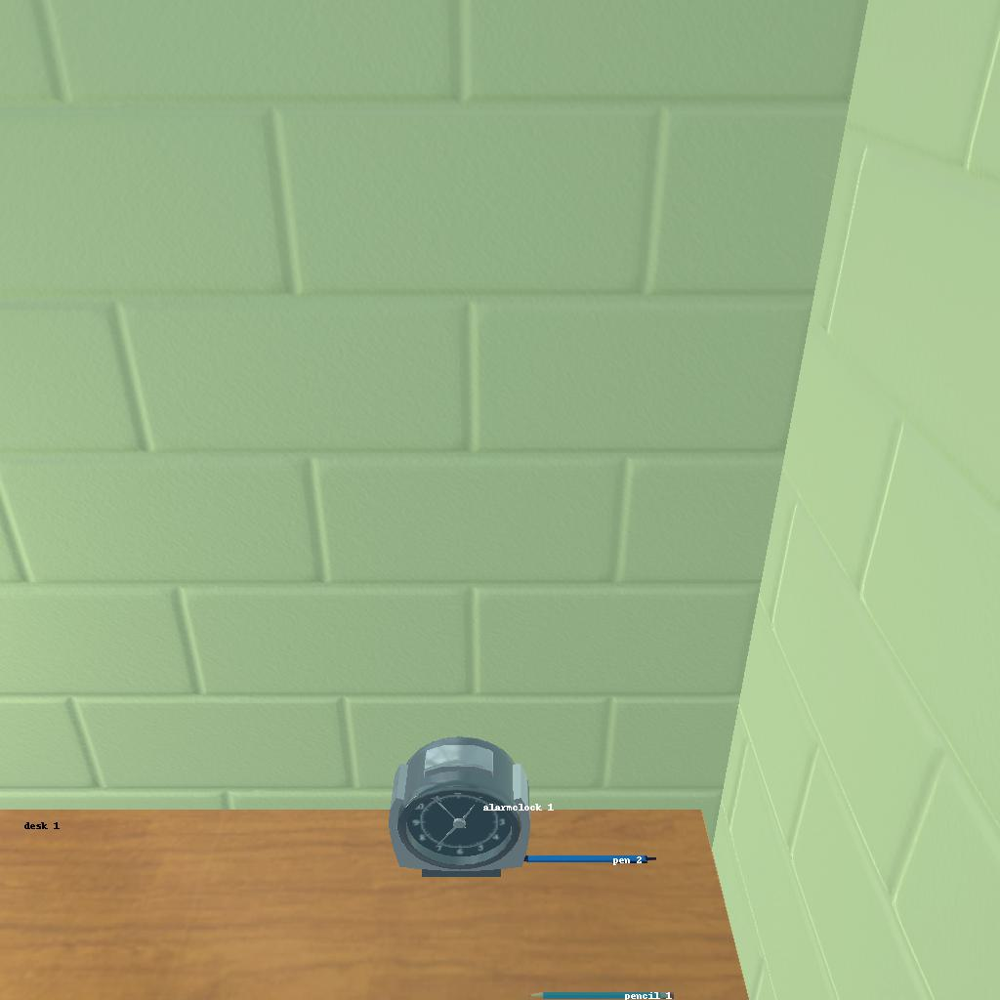

---------------------------------------------------------task: 8---------------------------------------------------------
--------------------------------------------------------------------------------------------------------------------------------------------------------------------
--------------------------------------------------------------------------------------------------------------------------------------------------------------------
Step:--------------------------------------------------------------------------13-------------------------------------------------------------------------------
----------------------------------------
VLM Prompt:
Image1:
Image2:
Image3:
**Instruction**
1. Analyze the provided image to identify all visible household objects, focusing on those relevant to the task description "put some laptop on desk."
2. Use the analysis of the image and the task hint "The agent must find an object of the desired type, pick it up, find the correct location to place it, and put it down there." to answer the question: what is the most reasonable action in the choices for the task description "put some laptop on desk"?
4. Decide and write the answer using the template: The answer is: (i): , where i is the real number. If there is no desired object in the image, search every place based on **Initial Observation** to find the object. And if no one is exactly correct, choose a similar answer.
**Initial Observation**
You are in the middle of a room. Looking quickly around you, you can see bed (1), garbagecan (1), desk (1), sidetable (1), drawer (1-5), laundryhamper (1)
**Answer Choices**
(1): go to bed 1
(2): go to garbagecan 1
(3): go to sidetable 1
(4): go to drawer 2
(5): go to laundryhamper 1
(6): go to drawer 3
(7): go to drawer 4
(8): go to drawer 5
(9): open drawer 1
(10): close drawer 1
(11): examine drawer 1
**Answer**
Let's think step by step by following the instructions.
----------------------------------------
----------------------------------------
Original Response:
First, we analyze the provided images. In Image1 and Image2, we can see a desk with an alarm clock and two pens, but no laptop is visible. In Image3, we see a sidetable with a book, a pen, and a donut, but again, no laptop.
Based on the task description "put some laptop on desk" and the task hint, we need to find a laptop first. The initial observation mentions a desk, which we can see in the images, but it doesn't mention the location of a laptop. Since the images do not show a laptop and the initial observation does not specify its location, we would need to search every place mentioned in the initial observation to find the laptop.
None of the answer choices directly mention finding or picking up a laptop, so we need to select an action that could lead to finding one. The most reasonable places to look for a laptop would be in drawers, as they are common storage places for such items.
The answer is: (9): open drawer 1. If the laptop is not there, we would continue with the subsequent actions to open other drawers until the laptop is found.
----------------------------------------
----------------------------------------
>>> Refine Original VLM Response and Get Pure Action: open drawer 1
----------------------------------------
-----------------------------------------------------------------
Running time: 13.43518352508545 seconds
Total Money: 4.7562999999999995
-----------------------------------------------------------------
-----------------------------------------------------------------
Text Observation:You open the drawer 1. The drawer 1 is open. In it, you see a book 1, a cd 1, and a pen 1.
-----------------------------------------------------------------
UNSUCCEED